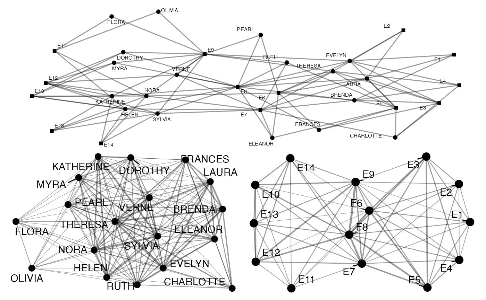
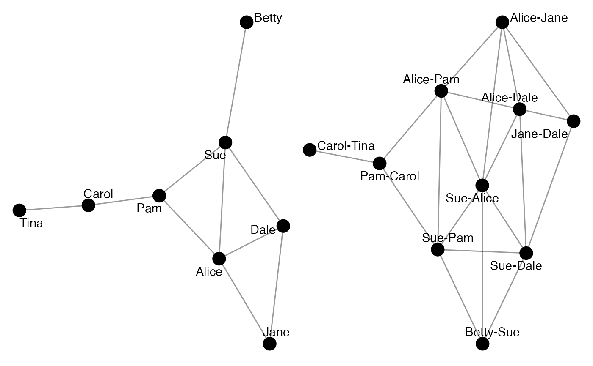
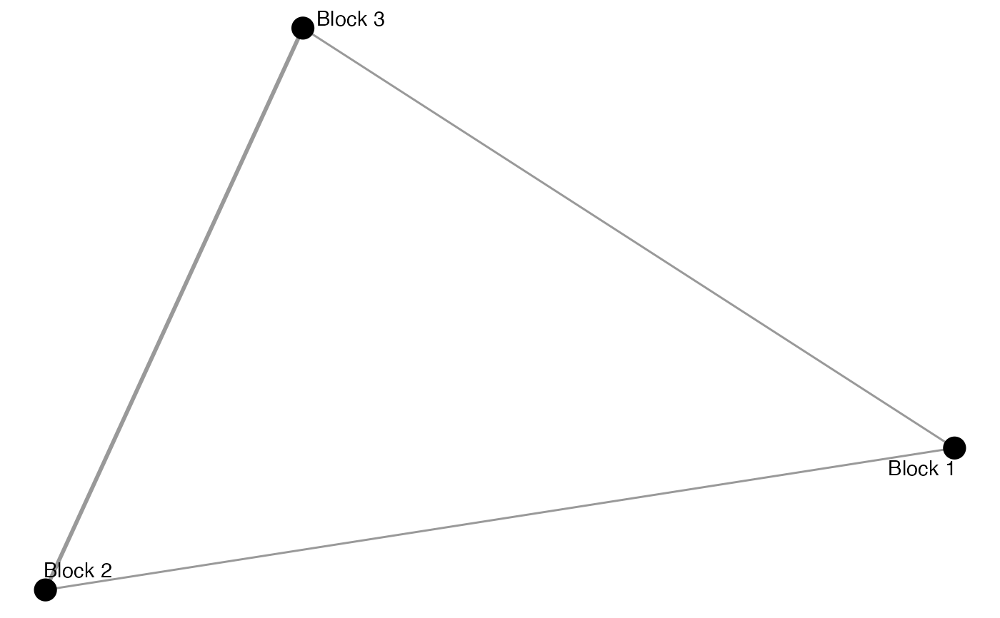

These functions offer tools for transforming migraph-consistent objects (matrices, igraph, tidygraph, or network objects). Transforming means that the returned object may have different dimensions than the original object.
to_mode1(object, similarity = c("count", "jaccard", "rand", "pearson", "yule"))
to_mode2(object, similarity = c("count", "jaccard", "rand", "pearson", "yule"))
to_giant(object)
to_subgraph(object, ...)
to_ties(object)
to_blocks(object, membership, FUN = mean)
to_matching(object, mark = "type")
to_anti(object)An object of a migraph-consistent class:
matrix (adjacency or incidence) from {base} R
edgelist, a data frame from {base} R or tibble from {tibble}
igraph, from the {igraph} package
network, from the {network} package
tbl_graph, from the {tidygraph} package
Method for establishing ties, currently "count" (default), "jaccard", or "rand". "count" calculates the number of coinciding ties, and can be interpreted as indicating the degree of opportunities between nodes. "jaccard" uses this count as the numerator in a proportion, where the denominator consists of any cell where either node has a tie. It can be interpreted as opportunity weighted by participation. "rand", or the Simple Matching Coefficient, is a proportion where the numerator consists of the count of cells where both nodes are present or both are absent, over all possible cells. It can be interpreted as the (weighted) degree of behavioral mirroring between two nodes. "pearson" (Pearson's coefficient) and "yule" (Yule's Q) produce correlations for valued and binary data, respectively. Note that Yule's Q has a straightforward interpretation related to the odds ratio.
Arguments passed on to dplyr::filter
A vector of partition memberships.
A function for summarising block content.
By default mean.
Other recommended options include median, sum,
min or max.
A logical vector marking two types or modes. By default "type".
Since some modifications are easier to implement for some objects than others, here are the currently implemented modifications:
| to_ | edgelists | matrices | igraph | tidygraph | network |
| mode1 | X | X | X | X | X |
| mode2 | X | X | X | X | X |
| giant | X | X | X | X | X |
| subgraph | X | X | X | X | X |
| ties | X | X | X | X | X |
| blocks | X | X | X | X | X |
| matching | X | X | X | X | X |
to_mode1(): Results in a weighted one-mode object
that retains the row nodes from a two-mode object,
and weights the ties between them on the basis of
their joint ties to nodes in the second mode (columns)
to_mode2(): Results in a weighted one-mode object
that retains the column nodes from a two-mode object,
and weights the ties between them on the basis of
their joint ties to nodes in the first mode (rows).
to_giant(): Returns an object that includes only the main component
without any smaller components or isolates
to_subgraph(): Returns a network subgraph filtered
on the basis of some node-related logical statement.
to_ties(): Returns a matrix (named if possible)
where the edges are the nodes
to_blocks(): Returns a reduced graph from a given
partition membership vector.
Reduced graphs provide summary representations of network structures
by collapsing groups of connected nodes into single nodes
while preserving the topology of the original structures.
to_matching(): Returns a network with only
matching ties
to_anti(): Returns the complement of a network
where only ties not present in the original network
are included in the new network.
to_matching() uses {igraph}'s max_bipartite_match()
to return a network in which each node is only tied to
one of its previous ties.
The number of these ties left is its cardinality,
and the algorithm seeks to maximise this such that,
where possible, each node will be associated with just one
node in the other mode or some other mark.
The algorithm used is the push-relabel algorithm
with greedy initialization and a global relabelling
after every \(\frac{n}{2}\) steps,
where \(n\) is the number of nodes in the network.
Goldberg, A V; Tarjan, R E (1986). "A new approach to the maximum flow problem". Proceedings of the eighteenth annual ACM symposium on Theory of computing – STOC '86. p. 136. doi:10.1145/12130.12144
autographr(ison_southern_women) /
(autographr(to_mode1(ison_southern_women)) |
autographr(to_mode2(ison_southern_women)))

autographr(ison_adolescents) +
autographr(to_ties(ison_adolescents))

(adolblock <- to_blocks(ison_adolescents,
node_regular_equivalence(ison_adolescents, k = 3)))
#> # A tbl_graph: 3 nodes and 4 edges
#> #
#> # An undirected multigraph with 1 component
#> #
#> # Node Data: 3 × 1 (active)
#> name
#> <chr>
#> 1 Block 1
#> 2 Block 2
#> 3 Block 3
#> #
#> # Edge Data: 4 × 3
#> from to weight
#> <int> <int> <dbl>
#> 1 1 1 0.167
#> 2 1 2 0.5
#> 3 1 3 0.5
#> # … with 1 more row
autographr(adolblock)

autographr(to_matching(ison_southern_women), "hierarchy")
autographr(to_anti(ison_southern_women), "hierarchy")